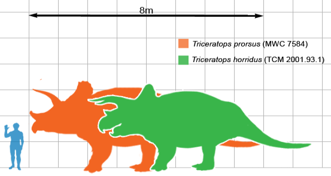

| № п/ п |
Наименование вида |
Ученый, открывший вид |
Дата открытия |
Вес/Размер | Масштаб |
| Валидные виды |  | ||||
| 1 | Triceratops horridus |
Отниел Чарлз Марш | 1889 | до 8т/ до 5м |
|
| 2 | Triceratops prorsus |
Отниел Чарлз Марш | 1889 | до 12т/ до 9м |
|
| Сомнительные виды | |||||
| 3 | Triceratops calicornis | Отниел Чарлз Марш | 1898 | до 10т/ до 8м |
|
| 4 | Triceratops maximus | Барнум Браун | 1933 | до 25т/ до 11м |
|
| 5 | Triceratops albertensis | Штернберг Чарльз Мортрам | 1949 | до 9т/ до 6м |
|
| 6 | Triceratops alticornis | Отниел Чарлз Марш | 1887 | до 8т/ до 5м |
|
Трицератопс — род растительноядных динозавров из семейства цератопсид. Существовали в конце маастрихтского века мелового периода и начале палеоценовой эпохи палеогенового периода, примерно от 68 до 66 миллионов лет назад на территориях современной Северной Америки.
Наиболее яркой их чертой является крупнейший среди наземных животных череп. Он мог достигать более двух метров в длину, при том, что на него приходилась почти треть длины тела животного. Трицератопс имел один рог над ноздрями и два метровых рога над каждым глазом. В задней части черепа располагался относительно короткий воротник. Большинство других цератопсид имели в воротнике большие окна, в то время как воротник трицератопсов состоял из сплошной кости.